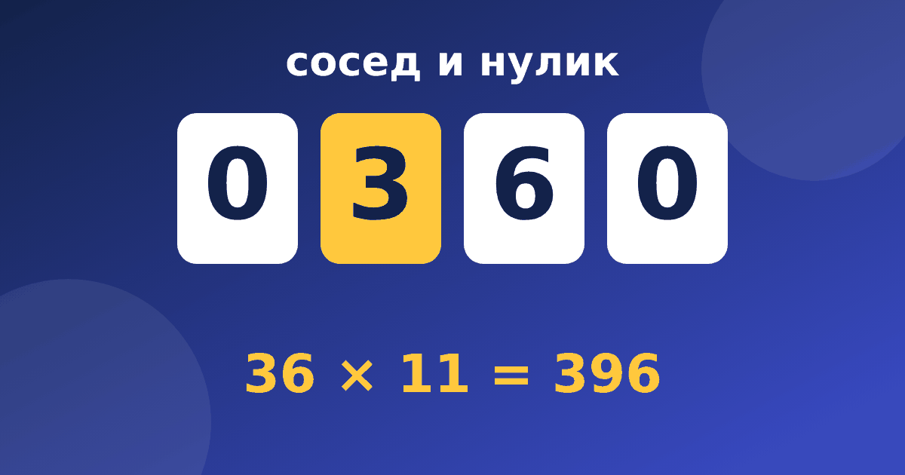

Система Трахтенберга: быстрый счёт без таблицы умножения

Слова «система Трахтенберга» всё чаще встречаются в родительских чатах: говорят, что по ней можно умножать большие числа без таблицы умножения. Это правда, но с оговорками. Разберёмся, что это за система, на чём она держится и кому она действительно полезна.
Кто такой Яков Трахтенберг
Яков Трахтенберг (1888–1953) родился в Одессе, был инженером и математиком, а позже жил в Европе. По рассказам самого автора и по книге, изданной после его смерти, основу приёмов он придумал в годы Второй мировой войны, когда находился в нацистских лагерях: счёт помогал ему занять голову. Часть подробностей этой истории известна только с его слов, поэтому мы пересказываем её осторожно. Достоверно другое: в Цюрихе он основал математический институт, а англоязычная книга «The Trachtenberg Speed System of Basic Mathematics» вышла в 1960 году, и после этого метод стал известен во всём мире.
Главная идея: сосед и нулик
В школе мы учим таблицу умножения и считаем столбиком. В системе Трахтенберга всё устроено иначе: ответ записывается цифра за цифрой, справа налево, а каждая цифра смотрит на своего «соседа» (так мы называем цифру справа от неё). Перед числом ставится ещё один ноль, «нулик», а у последней цифры справа есть невидимый нулик-сосед. Благодаря этому правило одинаково работает для всех цифр числа.
Для каждого множителя есть своё короткое правило. Ребёнку не нужно помнить 7 × 8 = 56: достаточно знать, что делать с цифрой и её соседом.
Пример: 36 × 11
Пишем число с нуликами: 0 3 6 0. Идём справа налево и складываем каждую цифру с её соседом.
- Цифра 6, сосед невидимый 0: 6 + 0 = 6. Пишем 6.
- Цифра 3, сосед 6: 3 + 6 = 9. Пишем 9.
- Нулик слева, сосед 3: 0 + 3 = 3. Пишем 3.
Ответ 396, и таблица умножения для этого не понадобилась. Подробно приём разобран в статье про умножение на 11 по Трахтенбергу.
Что входит в систему
Быстрый счёт по Трахтенбергу состоит из нескольких групп приёмов:
- умножение на 11 и 12, где нужно только складывать цифры с соседями;
- умножение на 5, 6 и 7, где появляется «половина соседа»;
- умножение на 9, 8, 4 и 3, где цифры дополняют «до 10» и «до 9»;
- возведение в квадрат чисел, которые оканчиваются на 5;
- «метод двух пальцев» для умножения двузначных чисел;
- проверка ответа девяткой.
Каждый из этих приёмов мы вынесли в отдельную статью, а в тренажёре «Быстрый счёт по Трахтенбергу» им соответствуют 13 коротких модулей.
Зачем это школьнику
Честно скажем: система Трахтенберга не входит в школьную программу и не заменяет таблицу умножения. Ребёнку по-прежнему нужно понимать, что такое умножение, и знать таблицу. Тем, кто уже выучил таблицу, приёмы дают три вещи. Первая: интерес, потому что фокус «умножить на 11 за пять секунд» увлекает. Вторая: внимательность, ведь каждую цифру приходится считать аккуратно. Третья: понимание устройства чисел, потому что за каждым правилом стоит простое разложение, например 11 = 10 + 1.
Частые вопросы родителей
С какого возраста можно начинать?
Опираться стоит не на возраст, а на готовность: ребёнок должен уверенно складывать числа до 20 и понимать, что такое умножение. Обычно это 3–4 класс, но самые простые приёмы (сосед, половина, умножение на 2 и 11) доступны и младшим школьникам.
Не вредит ли это обучению в школе?
Не вредит, если не подменять им школьные методы. Учитель по-прежнему проверяет запись столбиком, и ребёнок обязан её знать. Приёмы Трахтенберга работают как дополнение для устного счёта и для проверки результата.
Правда ли, что метод в разы быстрее обычного?
Скорость зависит от тренировки. Для умножения на 11 или 5 приём действительно очень короткий. Для умножения на 7 или 3 правила длиннее, и без практики ребёнок будет считать медленнее, чем по таблице. Не обещайте чудес, обещайте интерес и аккуратность.
С чего начать
Начинайте с самого простого: научите ребёнка находить соседа цифры и считать половину числа без остатка. Потом переходите к умножению на 11 и 12, а сложные правила оставьте на потом. Занимайтесь по 5–10 минут и не торопите: скорость приходит после понимания. Если вы выбираете между разными подходами к счёту, полезно прочитать про ментальную арифметику и устный счёт. Попробовать первый модуль можно бесплатно в тренажёре «Быстрый счёт».